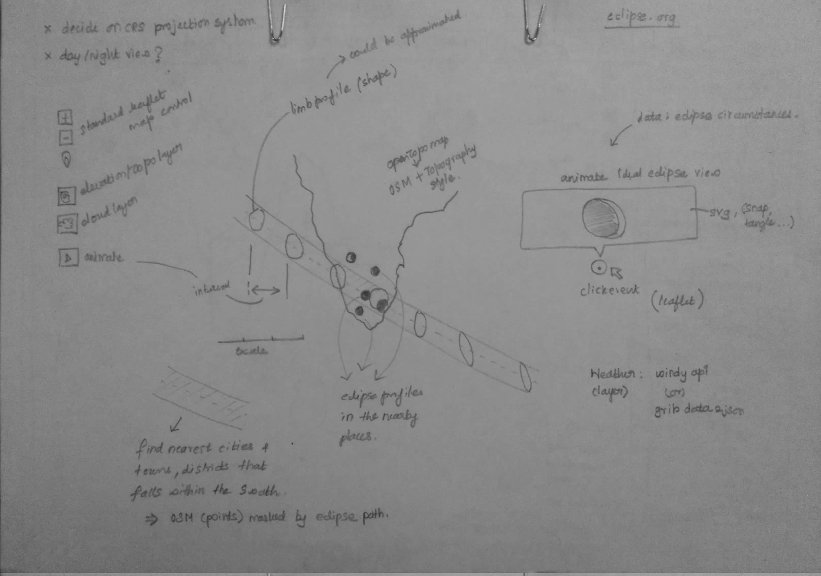
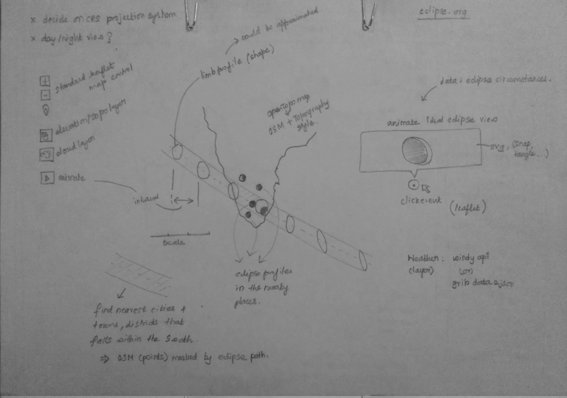

We all have experienced enjoying atleast one eclipse in our life time. It is also emotionally rewarding for some.
Every culture seems to have some kind of interpretation to it. However, for those who dared to question the normative
rules, such astronomical events happening within Earth's vicinity help wonder about the possible reasons behind
it. Scientific explanation in Astronomy so far has provided with tremendous amount of information that help realize
the beautiful complexity behind it. After getting to know it, i personally realized how fortunate humanity is in time,
to experience such awesome natural events.
It has also helped researchers, eclipse chasers, artists, by revealing the astronomical facts which apparently not
visible or detectable without eclipse. At first, in fact we are being flattered by the shadows of one rock on another.
The fact seems simple. But theorizing and proving the exact mechanisms are really really difficult. It simply takes
time. We need to observe painstakingly. Some desperate researcher has to keep their eye glued to the telescopes in order
to get reliable data to compile the observation.
Rare double eclipse image - with both Earth & Moon between Sun & SDO Credits : NASA SDO
Since eclipses are phenomena that occurs when one enoromous rock in space casts shadow on nearby shadow for a brief
duration, we are more interested in occultations that happens between star - Sun, planet Earth & its natural satellite Moon.
I am not going into much details as like a wikipedia article or any other research institute could offer. I consider
this writing as my view and learning from my peers ArunIssac & Surender. Eventhough eclipse is a pretty event, it is
ArunIssac who have actually discussed with me about writing a interactive application that might probably help people
to look into about eclipse and learn it from there. This stumbled upon while we were searching for personally entycing
projects and seems to be a perfect candidate. Eventhough i do not know much of programming, i have immediately accepted to
contribute for it.
HOW I GOT INTERESTED ?
Introduce me something that involves Electromagnetics, some Math, some Math which i can understand; Geography, Maps,
Space; Complexity; Networks then i will make sure i am interested in it. Like everybody, i have known very little about eclipse
stuff from what we have been taught in our schools. That is all for me. For looooong time i never cared about it much, than
experiencing it for a very few times till now. Being friends of some communities around often we get to meet at someones
place to discuss and deliberate of how things are going personally and socially. It ranges from hot burning socio-political-economics
to sex; from movies to hacking stuff.
In one of such meetings, we have leaned to do things that we are individually interested in first place before going to do
something collectively as a step towards to make individual more confident before taking the collaboration to next step. So everyone
in had their own interests and likes. As usual, i am learning stuff that related to interaction, maps, modeling, etc... One fine
day ArunIssac called me and asked What If ? there is an application of some sort that provides a neat interactive experience to the
upcoming eclipse event that was bound to happen in the upcoming months. That is all i needed to set the ship in sail. It involves
communicating about eclipse to others using some interactive thing, and i do know it involves usage of maps and visualization of some
sort. Hell ya ! i am going to contribute in one way or other.
WHAT I LEARN ?
Several astronomers constantly study, look & observe several occultation events happening by scoping several planets
from different observatories and artificial satellites, there is still much can be learned from the solar and lunar eclipses
that we are fascinated with so much. Since most celestial bodies are governed by same natural laws that govern our local
planets, whatever one learns about it, will eventually help to learn further and be wise in space exploration.
Well, i do not want to repeat stuff that are already available in Wikipedia and other wise websites contributed by clever researchers,
and institutions that specialize in planetary occultation stuff. This is going to be like my personal lab diary and notes, and
crediting my peers all along happily for the help they have provided me to learn this thing than i would have done myself. This
writing/notes will represent a redepiction of what i have learned. It might be useful for someother folk like me. Since the eclipse
events are a seasonal occurances, we believe it is not a niche thing to attempt and realized that its usage might be season based.
Furthermore, we have media and internet to propagate the event. If at all used by researchers, students, amateurs then we might call
it as a worthy contribution.
WHY & WHAT WE LIKE TO DO ?
Certainly, it is about designing a interactive computer application that uses Free Software libraries with the goal of
communicating eclipse stuff, and would inherently provide a educative package along with it to know how things work
behind the screen unlike the proprietary software applications that was shoved for students and budding researchers.
Fuck capital business models in Science. Even if someone has already done something similar, i would like to do something
for it.
It is very clear that i had to learn a lot of things that usually an Astronomer would have taken in a College. But it is
reasonable and fun. So far, i would not have learned about it unless i get stumbled upon it. This seems to involve fairly
a straight forward process:
Search, Understand & Learn for the Concepts
Search for existing Free Software works
Design for the intended Usage
Collaborate and ask for help
Try not to be a asshole while trying any of it
What i would personally imagine to have is something like the following image. Content of the image is not boring and
illustrates reality happened over a time period in that particular place. On seeing the image, many of us still wonder
how could it have been between the provided timestamps, and that is where our imagination kicks in like in a comic the
action sets itself in motion between the frames. So i personally hope a design offering such interaction would be useful
for anybody who is engaging it, and will remain in their memory that comes back when they again hear about eclipse.
Solar Eclipse illustrated with Timestamp Information (like a comic)
Moreover, not everyone can have the liberty or facility to enjoy such awesome natural event. Even when somebody has both,
they just cannot do their from their own position. That is what it makes a natural gift. With the rise of Internet,
Information sharing platforms, it is very much possible to live video stream the event for those who could not atleast
come to those places where it is vieweable. But it must also carry the knowledge along with it. A live video stream may
stream the natural effect, but what caused it, what are the reasons behind it still needs to be communicated to people who
are interested in learning it. Learning can be seriously fun. We need to atleast try to attempt it. If Learning needs information
and tools that convey the information they need to be Free. It must be flowable without any blockades.
OUR PROGRESS
What we have done so faaaaaar ?
Me being not good at coding and only familiar with basic programming have no idea where to start with while starting this project.
On the other hand, ArunIssac as far as i know, who is great at programming and coding at his computer language of interest does not
like programming in javascript for few reasons. But people have made it so, that any application must be either be developed for
android or else for the web browsers. So our plan is to first make some web application so that indirectly we can learn about the
web development so that we can adapt to some of its goodies - although we hate centralization, obfuscation and minification to the core.
Gathering Required Resources :
Even before starting to design the prototype, we made ourselves little more aware about the theoretical, mathematical stuff that
underpins the scientific explanation behind the solar and lunar occultation as viewed by an observer from Earth. We found the following
resources are very much helpful :


 Solar Eclipse illustrated with Timestamp Information (like a comic)
Solar Eclipse illustrated with Timestamp Information (like a comic)

 
